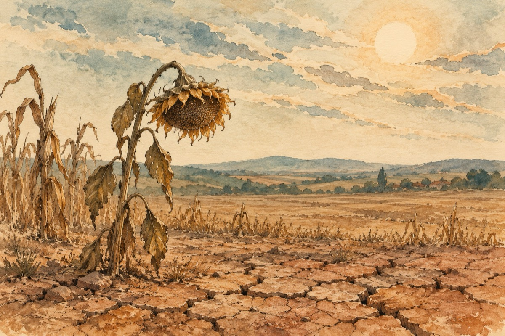

Ce se-ntâmplă
Ce se-ntâmplă Doamne oare
Pământul moare de sete,
Soarele și-a pus norii la uscare
Pe tot cerul, peticit ca niște zdrențe!
Dinspre sud și de oriunde
Vânturile s-au pornit
Suflul lor adânc pătrunde
Peste plante, ce jalnic s-au ofilit!
Geaba a plouat tot anul
Mai mult ca să ne inunde
Când acum moare porumbul
Cu grăunțele uscate, unde apa nu ajunge!
Soarele cu floarea lui
Ce stă tot timpu-n oglindă
Da, este floarea Dumnealui
Cu miezul rămas stafidă!
Viile trăiesc din rouă
Și cu boabele zbârcite,
Așteptând mereu să plouă
Ca în vremurile trecute!
Adu DOAMNE ploile,
Așa cum tot timpu-ai făcut
S-adunăm recoltele
Cu sorocul împlinit!
Vasile Groza